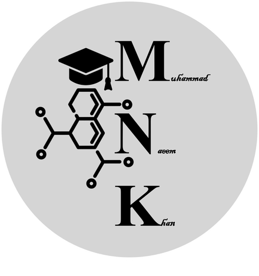

An organic chemist with a
materials perspective.
I study how molecular design translates into optical, electronic, and redox properties in π-conjugated small molecules.
Research profile
My research begins with a question: how do deliberate changes in molecular structure influence light absorption, emission, and charge redistribution? As a PhD candidate in Chemistry at the Lahore University of Management Sciences (LUMS), under the supervision of Dr. Rahman Shah Zaib Saleem ↗, I explore this question through π-conjugated small molecules with potential applications in organic photovoltaics and related optoelectronic materials.
Naphthyl chalcones provided an initial platform for examining substituent effects and molecular conjugation. Since then, my work has expanded to thiophene-functionalized chalcones, chalcone-derived pyrazoline–thiazole hybrids, and rigidified indane-1,3-dione systems. Each molecular family offers a different way to investigate how donor–acceptor character, π-bridges, and structural rigidity shape material properties.
I follow these questions from reaction planning and multistep synthesis to isolation, structural characterization, and interpretation. UV–visible absorption, photoluminescence, cyclic voltammetry, and DFT/TD-DFT calculations help connect the molecules prepared in the laboratory with their excited-state and redox behavior. Research on 2-aminoimidazolones, together with collaborations involving quinoxaline carboxamides and organoselenium compounds, has extended the scope of this work beyond chalcone chemistry.
Research also means sharing methods and ideas. Alongside my doctoral projects, I have supported chemistry teaching, mentored junior researchers in synthetic workflows, and contributed to departmental academic service. I am particularly interested in collaborations that combine purposeful organic synthesis with careful experimental and computational analysis.


Academic training.
PhD in Chemistry · LUMS
Dissertation: Experimental and Computational Investigations of Donor-Acceptor Small Molecules with Potential Applications in Organic Photovoltaics.
Supervisor: Dr. Rahman Shah Zaib Saleem · Coursework CGPA: 3.60/4.00MPhil in Chemistry · Quaid-i-Azam University
Research on N,N′-disubstituted selenoureas: synthesis, characterization, biological, and DFT studies.
Supervisor: Prof. Dr. Ameen Badshah · CGPA: 3.60/4.00MSc in Chemistry · Quaid-i-Azam University
Islamabad, Pakistan
BSc with Distinction · University of Science and Technology, Bannu
Merit certificate for securing second position.
Working across experiment and theory.
Synthetic organic chemistry
Multistep synthesis; Claisen–Schmidt and Knoevenagel condensations; Suzuki–Miyaura coupling; heterocyclic ring formation; reaction optimization; chromatographic purification and spectroscopic interpretation.
Computational chemistry
DFT and TD-DFT; geometry optimization; frequency analysis; frontier orbitals; density of states; electrostatic potentials; transition-density analysis; reorganization energies and transfer integrals.
Characterization
UV–visible absorption, photoluminescence, NMR, FTIR, GC–MS, cyclic voltammetry, LSV, EIS, and complementary materials-characterization methods.
Software
Gaussian, GaussView, Multiwfn, GaussSum, ChemOffice, MestReNova, OriginPro, Adobe Illustrator, EndNote, and Linux/Ubuntu.
Connect through chemistry.
Organic synthesis, molecular optoelectronics, and collaborative research.